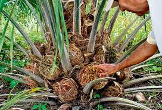
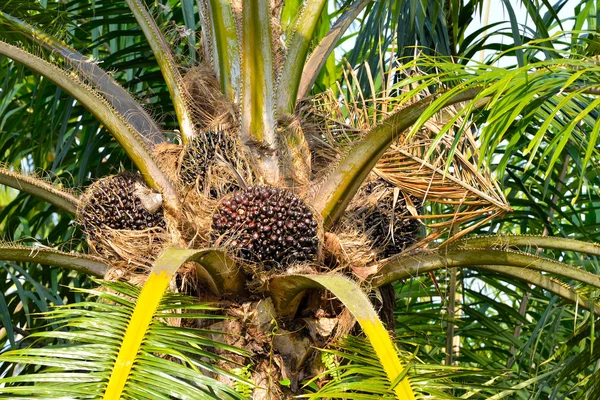
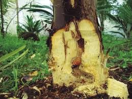
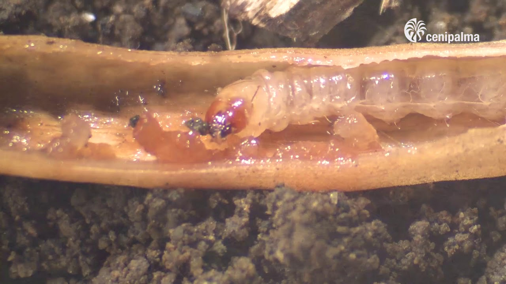

Sobre mí

Mi nombre es Walter - Técnico en Palma
Soy un profesional en sanidad vegetal con experiencia en diagnóstico y control de enfermedades en palmas. He trabajado en proyectos rurales y agrícolas enfocados en el desarrollo sostenible del cultivo de palma de aceite y especies nativas.
Mi misión es concientizar y brindar herramientas prácticas para cuidar nuestros recursos naturales con conocimiento técnico y pasión por la tierra.
Enfermedades frecuentes

Letal Amarilla
Amarillamiento progresivo causado por fitoplasmas, común en climas tropicales.
Anillo Rojo
Infección por nematodos que genera debilitamiento y caída de hojas.

Podredumbre del Cogollo
Causada por hongos que afectan el corazón de crecimiento de la palma.
Cuidados esenciales
- Exposición solar adecuada y buen drenaje del suelo.
- Riego controlado, evitando encharcamientos.
- Aplicar controles biológicos o naturales de plagas.
- Podar hojas dañadas para evitar propagación.
Galería



Contacto
¿Tienes preguntas o deseas más información sobre la sanidad de las palmas?
- Correo: palmasaludable@email.com
- 📱 WhatsApp: +57 300 111 2233
- Redes:
Este formulario es informativo. Contáctanos directamente.
📲 Contactar por WhatsApp
Escribir un correo